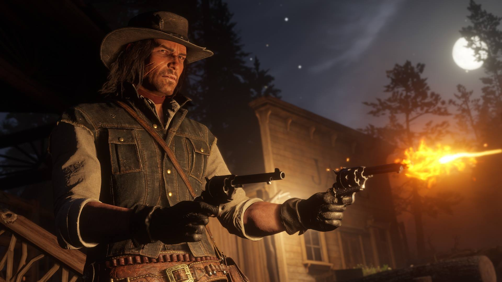

Red Dead Redemption 2: A Journey Through the Dying West
Step into the worn leather boots of Arthur Morgan, an outlaw caught in the fading grip of the Wild West. Red
Dead Redemption 2 is a sprawling epic that weaves a tale of loyalty, betrayal, and the struggle for survival
in a
rapidly changing world. Immerse yourself in a breathtakingly realized open world, teeming with life and
brimming
with unforgettable characters.
Our Review
Red Dead Redemption 2 is not just a game; it's an experience. Rockstar Games has crafted a masterpiece that
pushes the boundaries of interactive storytelling and open-world design. From the snow-covered peaks of the
Grizzlies to the swamps of Lemoyne, every inch of this world feels alive and begs to be explored.
Story and Characters
The narrative is a slow burn, but it's a captivating one. Arthur Morgan is a complex and conflicted
protagonist,
and his journey of self-discovery is both heartbreaking and inspiring. The supporting characters are equally
well-developed, each with their own motivations and personalities. The writing is superb, with memorable
dialogue
and powerful moments that will stay with you long after the credits roll.
Gameplay
RDR2 offers a vast and varied open world to explore, with countless activities to keep you engaged. The
missions
are diverse and well-designed, ranging from thrilling shootouts to tense heists. The combat system is
satisfying,
and the hunting and fishing mechanics are surprisingly deep. But it's the little details that truly elevate the
gameplay – the way Arthur interacts with his horse, the realistic animations, and the dynamic weather system all
contribute to an unparalleled level of immersion.
Graphics and Sound
Visually, RDR2 is stunning. The environments are breathtakingly detailed, and the character models are
incredibly
lifelike. The lighting and weather effects are particularly impressive, creating a truly immersive atmosphere.
The
sound design is equally superb, with a haunting soundtrack and realistic sound effects that bring the world to
life.
Pros
- Captivating story and characters
- Vast and immersive open world
- Stunning graphics and sound
- Deep and rewarding gameplay
Cons
- Slow pacing may not appeal to everyone
- Can be challenging at times
Overall
Red Dead Redemption 2 is a landmark achievement in video game storytelling and open-world design. It's a
must-play for anyone who appreciates a deep and immersive experience.
Screenshots



Guides and Walkthroughs
Best Weapons in RDR2
In the unforgiving world of Red Dead Redemption 2, having the right tools for the job can mean the
difference
between life and death. Here's a rundown of some of the best weapons in the game:
- Lancaster Repeater: A reliable and powerful rifle, perfect for taking down enemies from
a
distance.
- Schofield Revolver: A classic sidearm with good accuracy and stopping power.
- Springfield Rifle: A versatile rifle that can be used for both hunting and combat.
- Pump-Action Shotgun: Devastating at close range, ideal for clearing out groups of
enemies.
- Tomahawk: A silent and deadly weapon for close-quarters combat.
Remember to upgrade your weapons and customize them with different sights and grips to suit your
playstyle.
RDR2 Money Making Guide
Need some extra cash to fund your outlaw adventures? Here are a few tips for making money in Red Dead
Redemption 2:
- Rob Trains and Stagecoaches: A classic Wild West money-making scheme, but be prepared
for
a fight.
- Hunt and Sell Animal Pelts: Perfect your hunting skills and sell valuable pelts to
trappers.
- Complete Bounties: Track down wanted criminals and bring them in dead or alive for a
reward.
- Play Poker: Test your luck at the poker tables in saloons across the map.
- Loot and Sell Valuables: Keep an eye out for valuables in houses, camps, and on enemies.
Remember to save your money and invest it wisely in things like camp upgrades, new horses, and better
weapons.
How to Get the Best Ending
Red Dead Redemption 2 has multiple endings, and the one you get depends on your choices throughout the
game.
To achieve the best ending, focus on building up your honor by making morally good decisions. Help those in
need, avoid unnecessary violence, and show compassion to others. This will lead to a more satisfying
conclusion
for Arthur's story.